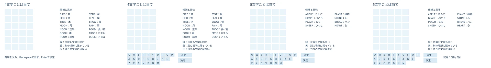

4文字ことば当ての発展
候補と意味を見ながら、4文字の英単語を6回以内に当てます。
始める前に
ZIPを展開してできたフォルダーでindex.htmlを開きます。基本編の完成版から始めます。ZIPには基本編の3ファイルが入っています。
WindowsでZIPを展開する（動画）
作業用フォルダーのscript.jsを編集します。各ステップで保存し、index.htmlを再読み込みしてください。
ステップ 1：画面キーを使う
このステップの見本を図で見る
handleKey({key:"M", ...}) → draft += "M"
キーボードでMを押すのと同じ入力処理
draft = "M" + "O" = "MO"
次の空いたマスにOが入る
draft = "MO".slice(0, -1) = "M"
Backspaceと同じように最後の1文字を消す
ゲーム画面とコードの前後を見る

このステップの見本
この行を足す前 変わったコードの一例（script.js）
ctx.fillStyle = "#1f3d5b"; ctx.fillText(keyboard[row][col], 37 + col * 31, 368 + row * 28);
見本で確かめること
画面の文字をクリックして候補を入力し、決定を押せます。
目標
画面の文字をクリックして入力します。
確認欄までは準備中です。作業を順に進め、確認欄で保存して動作を確かめます。
書く場所と置き換えるコード
画面用のキー一覧を用意する
作業用フォルダーの script.js で、次の目印を探し、その直後に書きます。
目印
window.addEventListener("keydown", handleKey);
書き足すコード
const keyboard = ["QWERTYUIOP", "ASDFGHJKL", "ZXCVBNM"];
3行の文字列で画面キーボードの並びを用意します。
画面キーボードを描く
作業用フォルダーの script.js で、次の範囲を探して置き換えます。
置き換える範囲
ctx.fillText("英字を入力、Backspaceで消す、Enterで決定", 30, 385);
if (state !== "playing") ctx.fillText("Spaceで再挑戦", 490, 370);
置き換えるコード
if (state !== "playing") ctx.fillText("Spaceで再挑戦", 490, 425);
for (let row = 0; row < keyboard.length; row++) for (let col = 0; col < keyboard[row].length; col++) {
ctx.fillStyle = "#d8eaf5"; ctx.fillRect(30 + col * 31, 350 + row * 28, 28, 25);
ctx.fillStyle = "#1f3d5b"; ctx.fillText(keyboard[row][col], 37 + col * 31, 368 + row * 28);
}
ctx.fillStyle = "#d8eaf5"; ctx.fillRect(360, 350, 90, 30); ctx.fillRect(360, 385, 90, 30);
ctx.fillStyle = "#1f3d5b"; ctx.fillText("消す", 380, 371); ctx.fillText(state === "playing" ? "決定" : "再挑戦", 375, 406);
行と列に応じてキーを並べ、消す・決定のボタンを描きます。終了後は決定の代わりに再挑戦を表示します。
クリックを受け取る準備をする
作業用フォルダーの script.js で、次の目印を探し、その直後に書きます。
目印
const keyboard = ["QWERTYUIOP", "ASDFGHJKL", "ZXCVBNM"];
書き足すコード
canvas.addEventListener("click", event => {
});
Canvas へのクリック処理を登録します。
クリック位置を内部座標に直す
作業用フォルダーの script.js で、次の目印を探し、その直後に書きます。
目印
canvas.addEventListener("click", event => {
書き足すコード
const rect = canvas.getBoundingClientRect();
const x = (event.clientX - rect.left) * canvas.width / rect.width;
const y = (event.clientY - rect.top) * canvas.height / rect.height;
表示上のクリック位置を Canvas 内部の座標に変換します。
クリックした文字を入力する
作業用フォルダーの script.js で、次の目印を探し、その直後に書きます。
目印
const rect = canvas.getBoundingClientRect();
const x = (event.clientX - rect.left) * canvas.width / rect.width;
const y = (event.clientY - rect.top) * canvas.height / rect.height;
書き足すコード
for (let row = 0; row < keyboard.length; row++) {
for (let col = 0; col < keyboard[row].length; col++) {
if (x >= 30 + col * 31 && x < 58 + col * 31 && y >= 350 + row * 28 && y < 375 + row * 28) handleKey({key:keyboard[row][col], repeat:false, preventDefault(){}});
}
}
各キーの四角の中なら、その文字を handleKey() に渡します。
消す・決定をクリックで操作する
作業用フォルダーの script.js で、次の目印を探し、その直後に書きます。
目印
for (let row = 0; row < keyboard.length; row++) {
for (let col = 0; col < keyboard[row].length; col++) {
if (x >= 30 + col * 31 && x < 58 + col * 31 && y >= 350 + row * 28 && y < 375 + row * 28) handleKey({key:keyboard[row][col], repeat:false, preventDefault(){}});
}
}
書き足すコード
if (x >= 360 && x <= 450 && y >= 350 && y <= 380) handleKey({key:"Backspace", repeat:false, preventDefault(){}});
if (x >= 360 && x <= 450 && y >= 385 && y <= 415) handleKey({key:state === "playing" ? "Enter" : " ", repeat:false, preventDefault(){}});
ボタンの範囲なら Backspace、Enter、終了後の Space と同じ処理を呼びます。
保存後の確かめ方
保存してゲーム画面を更新する（動画）
index.html を再読み込みします。画面の文字をクリックして候補を入力し、決定を押せます。 この段階の見本を開く
小さな練習
画面の決定とEnterは別々の判定を持ちますか。
練習の答え
どちらもhandleKeyの同じ判定を使います。
ステップ 2：5文字の候補を使う
このステップの見本を図で見る
draft.length !== 5
4文字なので提出できない
draft.length === 5 && words5にAPPLEがある
5列の1行として答えと照合する
ゲーム画面とコードの前後を見る
このステップの見本
const wordLength = 4;
変わったコードの一例（script.js）const words = words5;
見本で確かめること
盤面が5列になり、5文字の候補を入力できます。
目標
5文字の単語でも同じ判定を使います。
確認欄までは準備中です。作業を順に進め、確認欄で保存して動作を確かめます。
書く場所と置き換えるコード
5文字の候補を用意する
作業用フォルダーの script.js で、次の目印を探し、その直前に書きます。
目印
const words = words4;書き足すコード
const words5 = [];
新しい配列 words5 に5文字の単語と意味を入れます。
最初の候補を入れる
作業用フォルダーの script.js で、次の目印を探し、その直後に書きます。
目印
const words5 = [書き足すコード
{word:"APPLE", meaning:"りんご"}, {word:"GRAPE", meaning:"ぶどう"}, {word:"PEACH", meaning:"もも"}, {word:"SHEEP", meaning:"ひつじ"}各要素に英単語と意味を入れます。
残りの候補を入れる
作業用フォルダーの script.js で、次の目印を探し、その直後に書きます。
目印
{word:"SHEEP", meaning:"ひつじ"}書き足すコード
, {word:"PLANT", meaning:"植物"}, {word:"STONE", meaning:"石"}, {word:"BREAD", meaning:"パン"}, {word:"HEART", meaning:"心"}続けて残りの5文字の候補を追加します。
5文字の問題を使う
作業用フォルダーの script.js で、次の範囲を探して置き換えます。
置き換える範囲
const words = words4;
const wordLength = 4;
置き換えるコード
const words = words5;
const wordLength = 5;
words を words5 にし、文字数を5にします。
保存後の確かめ方
盤面が5列になり、5文字の候補を入力できます。 この段階の見本を開く
小さな練習
APPLEにはPが何個ありますか。
練習の答え
2個です。
ステップ 3：成績を保存する
このステップの見本を図で見る
stats = {played:0, won:0}
保存記録がないときは0から
stats.played++; stats.won++; localStorage.setItem(...)
1勝 / 1回を保存
JSON.parse(localStorage.getItem("word-guess-stats"))
保存に成功していれば1勝 / 1回が残る
ゲーム画面とコードの前後を見る
このステップの見本
let answer, rows, draft, state, message;
変わったコードの一例（script.js）let answer, rows, draft, state, message, stats;
見本で確かめること
1回正解し、再読み込みすると成績が残ります。
目標
挑戦回数と正解回数を保存します。
確認欄までは準備中です。作業を順に進め、確認欄で保存して動作を確かめます。
書く場所と置き換えるコード
成績を覚える
作業用フォルダーの script.js で、次の範囲を探して置き換えます。
置き換える範囲
let answer, rows, draft, state, message;
置き換えるコード
let answer, rows, draft, state, message, stats;
stats はプレイ回数と勝った回数です。
保存した成績を読み込む
作業用フォルダーの script.js で、次の目印を探し、その直後に書きます。
目印
rows = []; draft = ""; state = "playing"; message = "";
書き足すコード
try { stats = JSON.parse(localStorage.getItem("word-guess-stats") || "null"); } catch { stats = null; }
if (!stats || !Number.isInteger(stats.played) || !Number.isInteger(stats.won) || stats.played < 0 || stats.won < 0 || stats.won > stats.played) stats = {played:0, won:0};
保存値が使えない場合は0回・0勝から始めます。不正な値も同じ初期値に戻します。
終了時に成績を保存する
作業用フォルダーの script.js で、次の目印を探し、その直後に書きます。
目印
else if (rows.length >= maxRows) { state = "over"; message = "答えは " + answer; }
書き足すコード
if (state !== "playing") {
stats.played++; if (state === "clear") stats.won++;
try { localStorage.setItem("word-guess-stats", JSON.stringify(stats)); } catch {}
}
プレイ回数を1増やし、クリアなら勝利数も1増やして保存します。保存できない場合もゲームを続けます。
成績を表示する
作業用フォルダーの script.js で、次の目印を探し、その直後に書きます。
目印
ctx.fillStyle = "#1f3d5b"; ctx.fillText("消す", 380, 371); ctx.fillText(state === "playing" ? "決定" : "再挑戦", 375, 406);
書き足すコード
ctx.fillText("記録：" + stats.won + "勝 / " + stats.played + "回", 490, 385);
勝利数とプレイ回数を画面に表示します。
保存後の確かめ方
1回正解し、再読み込みすると成績が残ります。 この段階の見本を開く
小さな練習
3回遊んで2回正解したときwonとplayedはいくつですか。
練習の答え
wonは2、playedは3です。